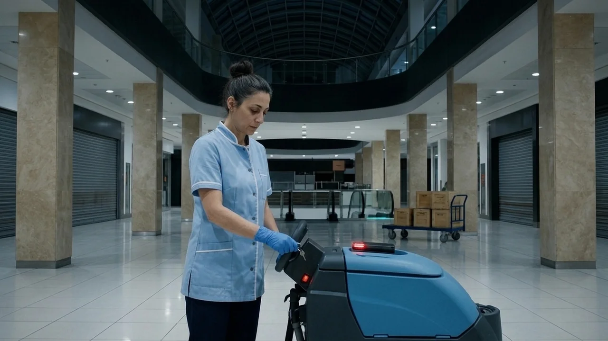
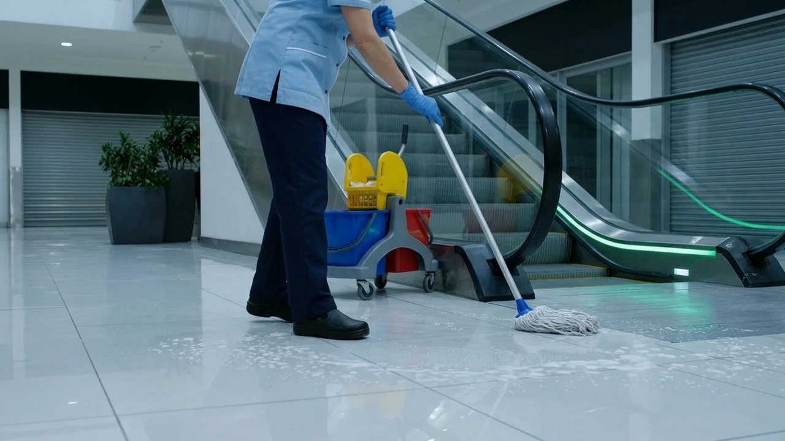
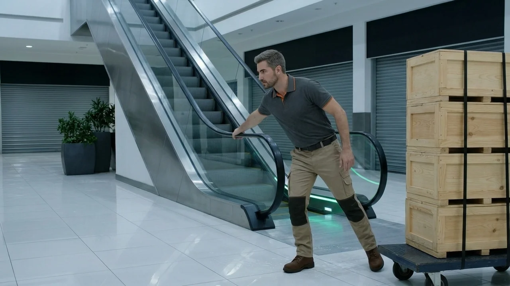
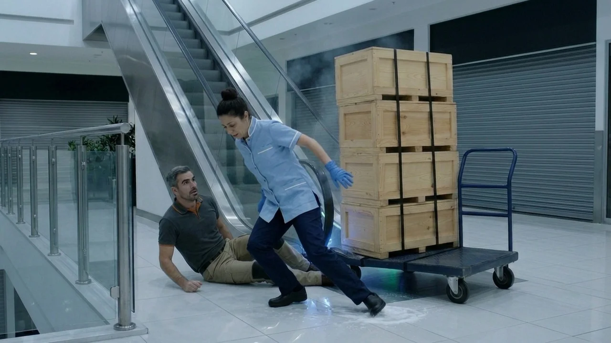
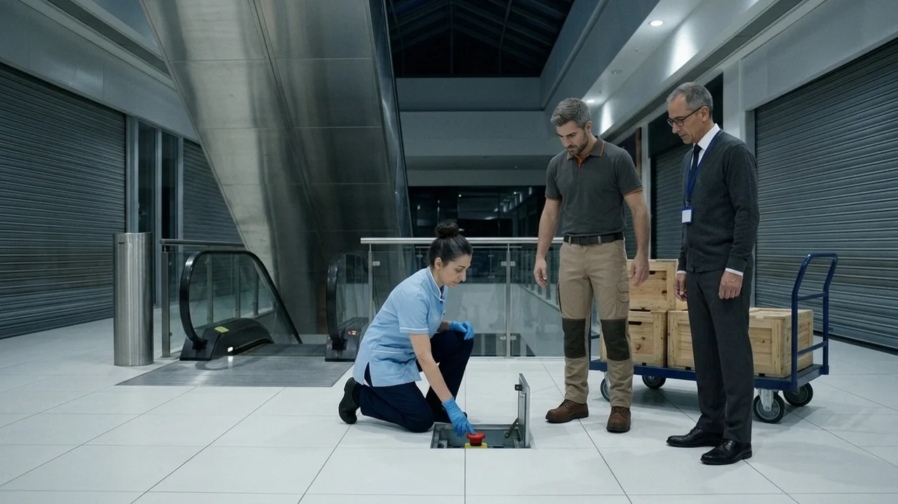

La máquina fregadora soltó un chasquido eléctrico, dejó escapar un hilo de olor a goma quemada y se detuvo en mitad del pasillo de perfumería. Marta Domínguez soltó el manillar y miró el reloj digital colgado sobre la entrada del aparcamiento: eran las cuatro y veinte de la madrugada.
Volvió a girar la llave de contacto dos veces, pero el indicador de batería parpadeó en rojo y los rodillos no se movieron. Llevaba desde la una de la mañana limpiando los aseos y la plaza central del centro comercial Galería Norte, y todavía le quedaban por fregar toda la planta baja y el anillo superior de restauración. Para colmo, a las tres en punto su compañero de cuadrilla se había marchado a urgencias quejándose de un flemón, dejando su carro a medias junto a los ascensores panorámicos.
Marta empujó la pesada máquina averiada hasta arrimarla contra una columna de mármol y vio aparecer al fondo del corredor a Héctor Roldán. El supervisor caminaba deprisa, consultando una carpeta con hojas impresas mientras el eco de sus zapatos resonaba bajo la bóveda de cristal oscuro.
—¿Qué haces parada, Marta? —preguntó Héctor sin detenerse del todo, señalando con el bolígrafo la galería superior—. Arriba todavía están las mesas del comedor sin repasar y el suelo de los cines da pena verlo.
—Se ha muerto la rotativa grande, Héctor —explicó Marta, quitándose el sudor de la frente con el dorso de la muñeca—. No tracciona ni aspira. Y como Iván se fue a las tres, estoy yo sola con los dos sectores. Con la fregona manual no llego a las seis ni corriendo.
Héctor suspiró mirando su reloj de pulsera y negó con la cabeza.
—Hoy no me puedes dejar ni un metro sin fregar, Marta —dijo con tono cortante—. A las seis entran los repartidores de panadería y a las ocho viene la dirección regional a revisar las tiendas nuevas. No tengo a nadie de reserva a estas horas. Coge el carro doble del cuarto de limpieza, dale una pasada rápida con desengrasante al pasillo de las escaleras mecánicas y sácame el trabajo adelante como sea.
—Pero si tengo que vallar cada tramo y esperar a que seque antes de recoger los conos, me van a dar las siete —advirtió ella.

—Pues no te entretengas montando el circuito entero de vallas, que a estas horas no hay clientes —replicó el supervisor dándose media vuelta hacia las oficinas—. Pon un cono donde estés pasando el mocho y date prisa, que nos jugamos la renovación del contrato.
Marta se quedó sola en el silencio frío de la galería. Le dolían los hombros y sentía las piernas pesadas, pero llevaba cuatro años en aquella contrata y sabía que una queja de la gerencia equivalía a que la cambiaran a un turno partido a cuarenta kilómetros de su casa.
Subió en el montacargas hasta la primera planta, sacó del almacén el carro de doble cubo con prensa manual y llenó el depósito azul con agua caliente. Para acabar antes y no tener que frotar dos veces las manchas de grasa frente a los locales de comida rápida, vertió un chorro generoso de desengrasante industrial concentrado directamente sobre el pavimento junto al desembarco de la escalera mecánica central.
La escalera estaba encendida en marcha ascendente porque los técnicos la habían dejado rodando en vacío para comprobar el engrase de la cadena antes de la apertura. El zumbido constante de los peldaños de aluminio acompañaba el golpe húmedo del mocho contra el gres porcelánico.
A las cinco y cincuenta de la mañana, a Marta solo le faltaba el tramo de diez metros que conectaba el pasillo de almacenes con la boca superior de la escalera mecánica. Al girar con la fregona para recoger la espuma, su codo tropezó con la botella abierta de desengrasante que llevaba encajada en la bandeja alta del carro.
El envase cayó de lado y derramó medio litro de líquido viscoso sobre el suelo ya enjabonado, formando una película transparente y resbaladiza como el hielo justo delante de la placa metálica de entrada a la escalera.
«Maldita sea, ahora sí que no llego», pensó Marta mirando el reloj de pared del pasillo: faltaban cinco minutos para las seis.

En lugar de ir al cuarto de útiles a por serrín absorbente y desplegar las tres vallas amarillas de cierre de pasillo, decidió diluir el charco a base de agua limpia con la fregona. Colocó un único cono amarillo de plástico en mitad del paso para cumplir el expediente y empezó a escurrir el mocho a toda velocidad.
Sin embargo, el cubo pesado le estorbaba para alcanzar la esquina del zócalo de cristal. Al intentar empujar el carro hacia atrás por el estrechamiento del corredor, las ruedas delanteras chocaron contra el cono de advertencia.
Con la prisa por terminar en aquellos cinco minutos finales, Marta agarró el cono amarillo por la punta y lo apartó detrás de una jardinera ornamental, fuera de la vista de quien viniera por el pasillo transversal. «Paso el mocho por este rincón en treinta segundos, recojo el cubo y ya queda seco», se dijo agachando la cabeza mientras frotaba con fuerza el borde metálico.
En ese mismo instante, por el corredor de carga que salía de los montacargas traseros, avanzaba Sergio Valdés empujando una plataforma rodante de hierro. Sobre la base llevaba apiladas cuatro cajas largas de madera con mamparas de cristal templado y herrajes de acero para el montaje de un escaparate.
La carga superaba el metro y setenta de altura, por lo que Sergio tenía que inclinarse hacia un lado para ver el camino. Iba con el tiempo justo porque Héctor le había pedido que dejara el material frente al local antes de que las limpiadoras cerraran el paso principal.
Al asomarse a la esquina de la galería, Sergio miró de frente: vio el pasillo despejado, sin vallas amarillas ni conos de peligro a la vista, y aceleró el paso aprovechando la inercia de los doscientos kilos de la plataforma.
Marta, que estaba de espaldas escurriendo la prensa del cubo, oyó el traqueteo de las ruedas macizas sobre las juntas del suelo demasiado tarde.

—¡Cuidado, Sergio, no pases que hay desengrasante! —gritó Marta volviéndose de golpe con los brazos abiertos.
Sergio intentó frenar tirando de las asas de hierro hacia su pecho, pero sus botas de seguridad acaban de entrar de lleno en la mancha invisible de jabón concentrado y agua.
Sus dos pies patinaron hacia adelante sin el menor agarre. En un intento desesperado por no caer de espaldas bajo el peso del carro, Sergio soltó el manillar derecho y lanzó la mano izquierda hacia la barandilla de goma negra de la escalera mecánica, que se movía de forma continua junto a él.
El tirón del pasamanos móvil lo desequilibró todavía más. Mientras el operario caía de rodillas sobre el mármol enjabonado, la pesada plataforma cargada de cristales siguió rodando cuesta abajo por la leve pendiente del desembarco y se desvió hacia la derecha.
Con un estruendo seco que sacudió toda la planta, la esquina de hierro del carro embistió el panel lateral de mando y la carcasa inferior de la escalera mecánica.
La chapa de acero inoxidable se hundió hacia adentro, saltaron chispas azules del cajetín eléctrico roto y el motor de la escalera dio un tirón violento sin llegar a detenerse. Las cajas de madera se desplazaron sobre la plataforma volcada, atrapando la pierna derecha y la cadera de Sergio contra el bastidor metálico y el zócalo lateral de los peldaños en movimiento.
—¡Para la escalera, Marta! ¡Párala que me está aplastando la pierna! —gritó Sergio con el rostro desencajado de dolor, tratando de empujar con las manos el borde del carro mientras las ruedas traseras rozaban contra el peine dentado de los escalones, produciendo un chirrido ensordecedor.

Marta soltó la fregona y corrió hacia la cabecera de la escalera mecánica con el corazón desbocado. Sus zapatillas patinaron en la espuma y tuvo que sujetarse al pilar de cristal para no caer también.
Buscó con la mirada algún botón rojo a la altura de la vista, pero solo vio una cerradura de llave plateada y dos pilotos verdes parpadeando junto al cristal roto del zócalo. En los cuatro años que llevaba limpiando el centro comercial, nadie le había explicado jamás dónde estaba oculto el interruptor de parada de emergencia ni cómo actuar si un equipo mecánico atrapaba a un compañero.
—¡No sé dónde se apaga! ¡Aquí solo hay una cerradura con llave! —exclamó ella golpeando con la palma abierta la carcasa metálica mientras el olor a cable quemado y el chirrido del hierro contra los peldaños iban en aumento.
—¡Tengo el tobillo enganchado debajo del eje, quítame el carro de encima! —suplicó Sergio apretando los dientes, con el pantalón manchado de sangre a la altura de la espinilla.
Durante unos segundos nadie supo qué hacer. No tenía emisora de radio encima y su teléfono móvil se había quedado dentro del bolsillo de su abrigo en el vestuario de la planta baja.
Dominada por la angustia de ver que los peldaños seguían empujando la estructura del carro contra la pierna de Sergio, Marta cometió el segundo error de la madrugada: en lugar de correr a pedir auxilio o buscar el cuadro de corte en la pared, decidió tirar del operario y de la carga por su cuenta en medio del suelo resbaladizo.
Se metió de lleno en el charco de desengrasante, hundió los pies buscando apoyo contra el perfil de aluminio de la moqueta lateral y agarró a Sergio por debajo de los brazos mientras intentaba apartar con la cadera el armazón de doscientos kilos.

—¡Empuja conmigo a la de tres! —jadeó Marta arqueando la espalda en una postura forzada, con las rodillas torcidas para no resbalar sobre la espuma.
Tiró hacia atrás con todas sus fuerzas. El carro apenas se movió dos centímetros antes de volver a encajarse contra el zócalo abombado. En ese segundo tirón, el pie izquierdo de Marta perdió apoyo sobre el jabón y todo el peso muerto de la carga y del cuerpo de Sergio recayó de golpe sobre su columna lumbar.
Sintió un chasquido seco y ardiente en la parte baja de la espalda, como si le hubieran clavado un hierro al rojo vivo entre las vértebras. Un grito se le quedó ahogado en la garganta; las piernas le fallaron y cayó de costado sobre el suelo mojado, incapaz de enderezar el tronco mientras el carro seguía vibrando contra el mecanismo en marcha.
En ese momento resonaron pasos a la carrera por la galería central. Héctor Roldán apareció doblando la esquina junto al vigilante del turno de apertura, alertados por el estruendo metálico que había retumbado hasta el vestíbulo inferior.
—¡Apartaos del borde! —gritó el vigilante al ver el humo que salía del faldón lateral.
Héctor se tiró de rodillas al otro lado del pasamanos, fuera de la mancha de jabón, metió los dedos bajo una pequeña tapa abatible de acero situada a ras del suelo —justo debajo de donde Marta había buscado en vano— y golpeó con el puño el pulsador rojo de parada de emergencia.
El zumbido del motor se cortó en seco y los peldaños de aluminio se clavaron al instante con un golpe sordo.
Entre el vigilante y Héctor aseguraron las ruedas de la plataforma con dos calzos de goma, retiraron las cajas superiores para aliviar el peso y lograron liberar la pierna de Sergio antes de que llegaran los sanitarios del servicio de emergencias.
El balance de aquellos cinco minutos que Marta había querido ahorrar fue de dos ambulancias en la puerta principal a las seis y cuarto de la mañana. Sergio sufrió una fractura de peroné y una fuerte contusión en la cadera que lo mantuvieron tres meses escayolado; Marta pasó seis semanas inmovilizada con una protrusión discal aguda en la zona lumbar provocada por el tirón en falso sobre el suelo resbaladizo.
La investigación conjunta del servicio de prevención y de la inspección de trabajo descartó que se tratara de una simple fatalidad. El informe reconstruyó la cadena exacta de fallos: la presión del supervisor por cubrir dos zonas con una máquina rota antes de las seis, la falta de aviso entre el equipo de mantenimiento y el de limpieza, la retirada del único cono de señalización tras una jardinera para ganar medio minuto y el desconocimiento absoluto por parte del personal de dónde se encontraban las paradas de emergencia de las escaleras.
Además, los técnicos subrayaron que el intento de rescate a tirones, sin cortar primero la energía del equipo ni limpiar la superficie jabonosa, había estado a punto de provocar que la propia Marta quedara atrapada junto a su compañero.
Cuando Marta Domínguez se reincorporó al centro comercial en otoño, el turno de noche había cambiado de arriba abajo. Ningún operario de mantenimiento podía trasladar cargas por un sector mientras estuviera abierto el turno de fregado; cada pasillo disponía de barreras extensibles fijas que nadie podía retirar hasta que el suelo estuviera completamente seco, y junto a cada escalera mecánica lucía un cartel reflectante de gran tamaño señalando la trampilla del botón rojo de parada. En la primera sesión práctica, antes siquiera de tocar un cubo, todos los trabajadores tuvieron que accionar el freno de emergencia con sus propias manos, recordando que ningún reloj merece poner el cuerpo por delante de la seguridad.